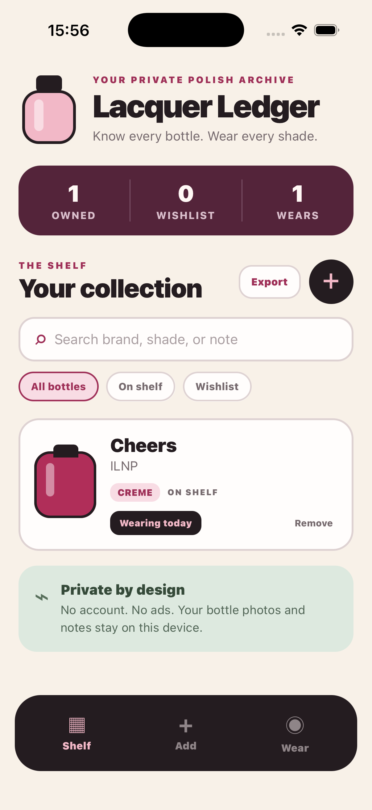
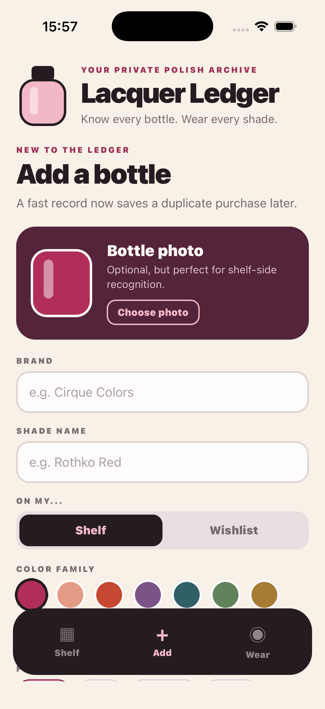
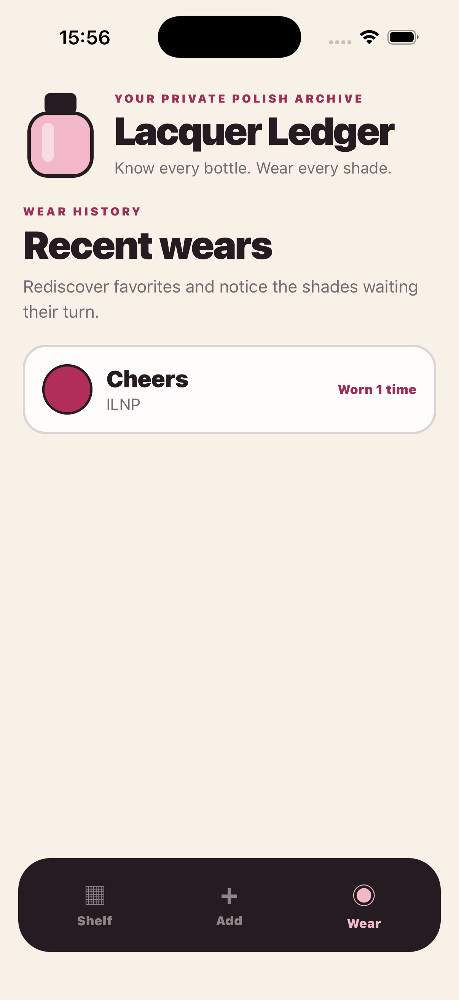

Build your shelf
Save brand, shade, finish, color family, notes, and an optional bottle photo.
Your private polish archive
A private nail polish collection and wear tracker for the bottles you own, the shades you want, and the favorites waiting to be rediscovered.
iOS: US$4.99 once · Google Play: US$2.99 once · Local prices may vary · No account · No ads · No subscription
Built for real collections
Lacquer Ledger turns a growing polish drawer into a searchable collection you can actually use.
Save brand, shade, finish, color family, notes, and an optional bottle photo.
Get warned when the same brand and shade are already in your collection.
Log each wear and see recent choices, wear counts, and shades waiting their turn.
Simple by design



Make your collection useful
Build a shelf you can search and a wear log that helps you choose. Our nail polish collection guides include practical examples and clear limits.
Build a useful nail polish inventory with brand and shade names, photos, wishlist entries, and a quick pre-shopping check.
A practical pre-shopping routine for exact duplicate shades, similar colors, and wishlist checks using your nail polish inventory.
Use wear counts and recent choices to rediscover nail polish favorites, with a simple rotation routine and an honest guide to CSV exports.
Try the free nail polish inventory worksheet and fictional shelf example. Separate owned bottles from a wishlist, then decide which details you want to keep. The text worksheet works without the app or an account.
Private by design
Lacquer Ledger has no account, backend, advertising, or analytics. Bottle details and photos stay on your device. Export creates a CSV of bottle details and wear fields; photos are not included.
Read the privacy policyQuestions
Everything you need to manage, export, and understand your collection.
Visit support →In a local database inside the app on your device. Lacquer Ledger does not operate a server.
Yes. Export bottle details and wear fields as a CSV file through your device's share sheet. Photos are not included, and version 1.0 does not import CSV files.
No. Lacquer Ledger has no subscription.